Lab 4: More with Vector Data and Visualizing Raster Data
In this lab, we are going to work with vector and raster data, spatially joining point data to vector data. We will learn how to visualize Census data, we will talk about how to wrangle spatial data, and we will get into some really cool ways to create choropleth maps (maps color coded by attributes). Finally, we will take a deep dive into raster data.
The objectives of this guide are to teach you how to:
- Wrangle vector data
- Create Publication-Ready Maps with vector data
- Introduce raster data
- Import our dataset with simulated geocoded addresses and mortality data from an ovarian cancer cohort
- Import a dataset with greenspace across the Bay Area
- Compare projections of datasets and re-project if needed
- Make maps
- Spatially join the two datasets
- Run a quick statistical analysis on the two datasets combined
Let’s get cracking!
First, let’s install our packages.
Load packages
library(sf)
library(MapGAM)
library(tidyverse)
library(tidycensus)
library(flextable)
library(RColorBrewer)
library(tmap)
library(terra)
In Lab 3, we worked with the tidycensus
package and the Census API to bring in Census data into R. We can use
the same commands to bring in Census geography. If you haven’t already,
make sure to sign
up for and install your Census API key. If you could not install
your API key, you’ll need to use census_api_key() to
activate it with the following code:
census_api_key("YOUR API KEY GOES HERE", install = TRUE)
Use the get_acs() command to bring in California
tract-level race/ethnicity counts, total population, and total number of
households. How did I find the variable IDs? Check Lab 3. Since we want tracts, we’ll use the
geography = "tract" argument.
ca.tracts <- get_acs(geography = "tract",
year = 2023,
variables = c(tpopr = "B03002_001",
nhwhite = "B03002_003", nhblk = "B03002_004",
nhasn = "B03002_006", hisp = "B03002_012"),
state = "CA",
output = "wide",
survey = "acs5",
geometry = TRUE,
cb = FALSE)## Getting data from the 2019-2023 5-year ACS## Downloading feature geometry from the Census website. To cache shapefiles for use in future sessions, set `options(tigris_use_cache = TRUE)`.## Using FIPS code '06' for state 'CA'
The only difference between the code above and what we used in Lab 3 is we have one additional argument added
to the get_acs() command: geometry = TRUE.
This tells R to bring in the spatial features associated with the
geography you specified in the command, in the above case California
tracts. You can set cache_table = TRUE so that you don’t
have to re-download after you’ve downloaded successfully the first time.
This is important because you might be downloading a really large file,
or may encounter Census FTP issues when trying to collect data.
Note: We can also download the data another way. We can go to the Census
Shapefiles website and navigate to 2023, Census Tracts, then
California. We can then download a .zip file that contains an ESRI
shapefile of the Census tracts for California. When we unzip the file,
we see a series of files. Thankfully, the sf package
has an st_read() function that can tackle this! For more
detailed data downloads, you can use National Historical Geographic Information
System (NHGIS). The code below is example of how we might bring in a
shapefile, just for future reference!
ca.tracts <- st_read("/Users/pjames1/Downloads/tl_2024_06_tract/tl_2024_06_tract.shp")OK, let’s go back to the data we got from tidycensus. Lets take a look at our data.
ca.tracts## Simple feature collection with 9129 features and 12 fields
## Geometry type: MULTIPOLYGON
## Dimension: XY
## Bounding box: xmin: -124.482 ymin: 32.52951 xmax: -114.1312 ymax: 42.0095
## Geodetic CRS: NAD83
## First 10 features:
## GEOID NAME tpoprE tpoprM nhwhiteE nhwhiteM nhblkE nhblkM nhasnE
## 1 06001442700 Census Tract 4427; Alameda County; California 2998 475 921 168 119 115 1577
## 2 06001442800 Census Tract 4428; Alameda County; California 3087 386 779 183 12 49 1671
## 3 06037204920 Census Tract 2049.20; Los Angeles County; California 2459 387 68 33 49 51 0
## 4 06037205110 Census Tract 2051.10; Los Angeles County; California 3690 446 14 14 8 12 0
## 5 06037320101 Census Tract 3201.01; Los Angeles County; California 3402 438 236 131 65 93 123
## 6 06037205120 Census Tract 2051.20; Los Angeles County; California 3409 624 15 24 8 10 70
## 7 06037206010 Census Tract 2060.10; Los Angeles County; California 3490 605 500 264 17 75 1030
## 8 06037206020 Census Tract 2060.20; Los Angeles County; California 8179 350 1379 165 2633 344 238
## 9 06037206050 Census Tract 2060.50; Los Angeles County; California 2290 509 138 49 18 22 151
## 10 06037111402 Census Tract 1114.02; Los Angeles County; California 5998 1024 2685 831 18 19 920
## nhasnM hispE hispM geometry
## 1 469 308 81 MULTIPOLYGON (((-122.0172 3...
## 2 356 561 181 MULTIPOLYGON (((-122.0023 3...
## 3 14 2331 387 MULTIPOLYGON (((-118.2028 3...
## 4 14 3642 446 MULTIPOLYGON (((-118.2196 3...
## 5 164 2978 481 MULTIPOLYGON (((-118.4388 3...
## 6 104 3303 628 MULTIPOLYGON (((-118.2202 3...
## 7 235 1919 519 MULTIPOLYGON (((-118.2392 3...
## 8 76 3541 285 MULTIPOLYGON (((-118.2379 3...
## 9 82 1932 519 MULTIPOLYGON (((-118.2287 3...
## 10 563 2322 433 MULTIPOLYGON (((-118.5023 3...
The object looks much like a basic tibble, but with a few differences.
- You’ll find that the description of the object now indicates that it is a simple feature collection with 9,129 features (tracts in California) with 12 fields (attributes or columns of data).
- The
Geometry Typeindicates that the spatial data are inMULTIPOLYGONform (as opposed to points or lines, the other basic vector data forms). Bounding boxindicates the spatial extent of the features (from left to right, for example, California tracts go from a longitude of -124.482 to -114.1312).Geodetic CRStells us the coordinate reference system.- The final difference is that the data frame contains the column geometry. This column (a list-column) contains the geometry for each observation. This looks familiar!
At its most basic, an sf object is a collection of simple features that includes attributes and geometries in the form of a data frame. In other words, it is a data frame (or tibble) with rows of features, columns of attributes, and a special column always named geometry that contains the spatial aspects of the features.
If you want to peek behind the curtain and learn more about the nitty gritty details about simple features, check out the official sf vignette.
Data Wrangling
There is a lot of stuff behind
the curtain of how R handles spatial data as simple features, but
the main takeaway is that sf objects are data frames.
This means you can use many of the tidyverse functions
we’ve learned in the past couple labs to manipulate sf
objects, including the pipe %>% operator. For example,
let’s break up the column NAME into separate tract, county and
state variables using the separate() function
We do all of this in one line of continuous code using the pipe
operator %>%
ca.tracts <- ca.tracts %>%
separate(NAME, c("Tract", "County", "State"), sep = "; ")
glimpse(ca.tracts)## Rows: 9,129
## Columns: 15
## $ GEOID <chr> "06001442700", "06001442800", "06037204920", "06037205110", "06037320101", "06037205120", "06037206010"…
## $ Tract <chr> "Census Tract 4427", "Census Tract 4428", "Census Tract 2049.20", "Census Tract 2051.10", "Census Tract…
## $ County <chr> "Alameda County", "Alameda County", "Los Angeles County", "Los Angeles County", "Los Angeles County", "…
## $ State <chr> "California", "California", "California", "California", "California", "California", "California", "Cali…
## $ tpoprE <dbl> 2998, 3087, 2459, 3690, 3402, 3409, 3490, 8179, 2290, 5998, 4567, 2926, 1856, 3157, 10967, 3440, 3616, …
## $ tpoprM <dbl> 475, 386, 387, 446, 438, 624, 605, 350, 509, 1024, 578, 621, 210, 317, 1060, 1048, 709, 436, 791, 925, …
## $ nhwhiteE <dbl> 921, 779, 68, 14, 236, 15, 500, 1379, 138, 2685, 2306, 11, 81, 1199, 3907, 0, 534, 174, 2627, 3515, 679…
## $ nhwhiteM <dbl> 168, 183, 33, 14, 131, 24, 264, 165, 49, 831, 535, 27, 73, 185, 687, 14, 205, 87, 680, 829, 231, 416, 8…
## $ nhblkE <dbl> 119, 12, 49, 8, 65, 8, 17, 2633, 18, 18, 93, 26, 2, 352, 1086, 324, 460, 1009, 264, 381, 84, 159, 603, …
## $ nhblkM <dbl> 115, 49, 51, 12, 93, 10, 75, 344, 22, 19, 97, 41, 4, 264, 679, 194, 520, 264, 384, 147, 55, 146, 343, 9…
## $ nhasnE <dbl> 1577, 1671, 0, 0, 123, 70, 1030, 238, 151, 920, 665, 13, 29, 1278, 3465, 4, 576, 0, 573, 527, 620, 1911…
## $ nhasnM <dbl> 469, 356, 14, 14, 164, 104, 235, 76, 82, 563, 176, 21, 45, 267, 624, 10, 190, 14, 241, 297, 633, 590, 2…
## $ hispE <dbl> 308, 561, 2331, 3642, 2978, 3303, 1919, 3541, 1932, 2322, 1343, 2795, 1685, 249, 2196, 3107, 1955, 1856…
## $ hispM <dbl> 81, 181, 387, 446, 481, 628, 519, 285, 519, 433, 265, 618, 182, 149, 548, 1050, 491, 385, 230, 150, 553…
## $ geometry <MULTIPOLYGON [°]> MULTIPOLYGON (((-122.0172 3..., MULTIPOLYGON (((-122.0023 3..., MULTIPOLYGON (((-118.2028 …
Another important data wrangling operation is to join attribute data
to an sf object. For example, let’s say you wanted to add tract level
median household income, which we can get using get_acs().
We could have searched online for the variable name, but it’s
B19013_001. Read the file in and save it as an object call
ca.inc.
ca.inc <- get_acs(geography = "tract",
year = 2023,
variables = c(medinc = "B19013_001"),
state = "CA",
survey = "acs5",
output = "wide")## Getting data from the 2019-2023 5-year ACS## Using FIPS code '06' for state 'CA'
Unlike before, we brought these data in without the
geometry = TRUE option. So this is just a table. But
remember, an sf object is a data frame, so we can use
left_join(), which we covered in Lab 2, to join the files ca.inc and
ca.tracts.
ca.tracts <- ca.tracts %>%
left_join(ca.inc, by = "GEOID")
#take a look to make sure the join worked
glimpse(ca.tracts)## Rows: 9,129
## Columns: 18
## $ GEOID <chr> "06001442700", "06001442800", "06037204920", "06037205110", "06037320101", "06037205120", "06037206010"…
## $ Tract <chr> "Census Tract 4427", "Census Tract 4428", "Census Tract 2049.20", "Census Tract 2051.10", "Census Tract…
## $ County <chr> "Alameda County", "Alameda County", "Los Angeles County", "Los Angeles County", "Los Angeles County", "…
## $ State <chr> "California", "California", "California", "California", "California", "California", "California", "Cali…
## $ tpoprE <dbl> 2998, 3087, 2459, 3690, 3402, 3409, 3490, 8179, 2290, 5998, 4567, 2926, 1856, 3157, 10967, 3440, 3616, …
## $ tpoprM <dbl> 475, 386, 387, 446, 438, 624, 605, 350, 509, 1024, 578, 621, 210, 317, 1060, 1048, 709, 436, 791, 925, …
## $ nhwhiteE <dbl> 921, 779, 68, 14, 236, 15, 500, 1379, 138, 2685, 2306, 11, 81, 1199, 3907, 0, 534, 174, 2627, 3515, 679…
## $ nhwhiteM <dbl> 168, 183, 33, 14, 131, 24, 264, 165, 49, 831, 535, 27, 73, 185, 687, 14, 205, 87, 680, 829, 231, 416, 8…
## $ nhblkE <dbl> 119, 12, 49, 8, 65, 8, 17, 2633, 18, 18, 93, 26, 2, 352, 1086, 324, 460, 1009, 264, 381, 84, 159, 603, …
## $ nhblkM <dbl> 115, 49, 51, 12, 93, 10, 75, 344, 22, 19, 97, 41, 4, 264, 679, 194, 520, 264, 384, 147, 55, 146, 343, 9…
## $ nhasnE <dbl> 1577, 1671, 0, 0, 123, 70, 1030, 238, 151, 920, 665, 13, 29, 1278, 3465, 4, 576, 0, 573, 527, 620, 1911…
## $ nhasnM <dbl> 469, 356, 14, 14, 164, 104, 235, 76, 82, 563, 176, 21, 45, 267, 624, 10, 190, 14, 241, 297, 633, 590, 2…
## $ hispE <dbl> 308, 561, 2331, 3642, 2978, 3303, 1919, 3541, 1932, 2322, 1343, 2795, 1685, 249, 2196, 3107, 1955, 1856…
## $ hispM <dbl> 81, 181, 387, 446, 481, 628, 519, 285, 519, 433, 265, 618, 182, 149, 548, 1050, 491, 385, 230, 150, 553…
## $ NAME <chr> "Census Tract 4427; Alameda County; California", "Census Tract 4428; Alameda County; California", "Cens…
## $ medincE <dbl> 199154, 180800, 70500, 52262, 110967, 28516, 60703, 148661, 48491, 58650, 110469, 65521, 88125, 151250,…
## $ medincM <dbl> 30525, 28293, 15698, 5659, 22149, 3246, 28578, 39223, 19295, 4106, 25299, 50598, 31246, 25702, 30687, 3…
## $ geometry <MULTIPOLYGON [°]> MULTIPOLYGON (((-122.0172 3..., MULTIPOLYGON (((-122.0023 3..., MULTIPOLYGON (((-118.2028 …
Note that we can’t use left_join() to join the attribute
tables of two sf files. You will need to either make
one of them not spatial by using the st_drop_geometry()
function or use the st_join() function to spatially join
them.
We use the function tm_shape() from the
tmap package to map the data.
tmap_mode("plot")## ℹ tmap modes "plot" - "view"tract_map <- tm_shape(ca.tracts) + tm_polygons()
tract_map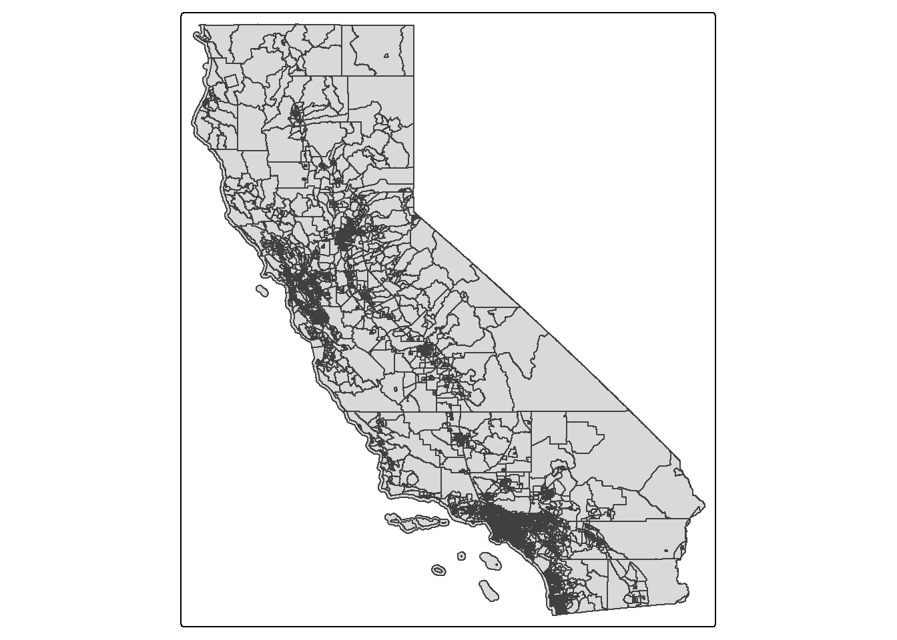
Spatial Data Wrangling
There is Data Wrangling and then there is Spatial Data Wrangling. Cue
dangerous sounding music. Well, it’s not that dangerous or scary.
Spatial Data Wrangling involves cleaning or altering your data set based
on the geographic location of features. The sf package
offers a suite of functions unique to wrangling spatial data. Most of
these functions start out with the prefix st_. To see all
of the functions, type in
methods(class = "sf")
We won’t go through all of these functions as the list is quite
extensive. But, we’ll go through a few relevant spatial operations for
this class below. The function we will be primarily using is
st_join().
Intersect
A common spatial data wrangling issue is to subset a set of spatial
objects based on their location relative to another spatial object. In
our case, we want to keep California tracts that are in the Sacramento
metro area. We can do this using the st_join() function.
We’ll need to specify a type of join. Let’s first try
join = st_intersects. First, let’s bring in a polygon of
the Sacramento metro area from Github.
url <- "https://github.com/pjames-ucdavis/SPH215/raw/main/sac.metro.rds"
download.file(url, destfile = "sac.metro.rds", mode = "wb")
sac.metro <- readRDS("sac.metro.rds")
Let’s take a look at sac.metro and understand what file it is.
glimpse(sac.metro)## Rows: 1
## Columns: 14
## $ CSAFP <chr> "472"
## $ CBSAFP <chr> "40900"
## $ GEOID <chr> "40900"
## $ GEOIDFQ <chr> "310M700US40900"
## $ NAME <chr> "Sacramento-Roseville-Folsom, CA"
## $ NAMELSAD <chr> "Sacramento-Roseville-Folsom, CA Metro Area"
## $ LSAD <chr> "M1"
## $ MEMI <chr> "1"
## $ MTFCC <chr> "G3110"
## $ ALAND <dbl> 13191309279
## $ AWATER <dbl> 548018355
## $ INTPTLAT <chr> "+38.7902715"
## $ INTPTLON <chr> "-121.0056427"
## $ geometry <MULTIPOLYGON [°]> MULTIPOLYGON (((-120.0064 3...
OK, that geometry looks good. And it’s a polygon, so that’s good. Let’s now try to intersect our sac.metro dataset with our ca.tracts dataset.
sac.metro.tracts.int <- st_join(ca.tracts, sac.metro,
join = st_intersects, left=FALSE)
The above code tells R to identify the polygons in ca.tracts
that intersect with the polygon sac.metro. We indicate we want
a polygon intersection by specifying join = st_intersects.
The option left=FALSE tells R to remove the polygons from
ca.tracts that do not intersect (make it TRUE and see what
happens) with sac.metro. Plotting our tracts, we get:
tm_shape(sac.metro.tracts.int) +
tm_polygons(col = "blue") +
tm_shape(sac.metro) +
tm_borders(col = "red")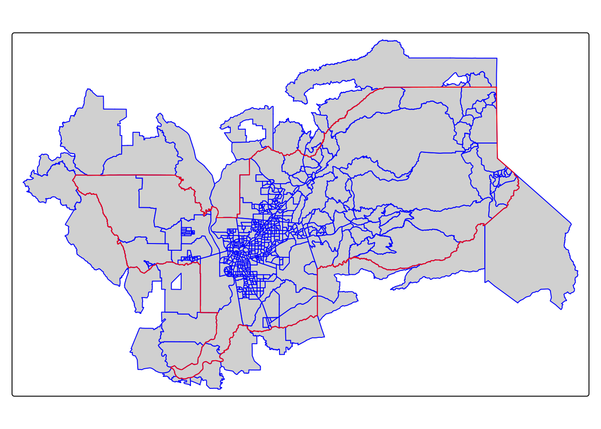
Within
We have one small issue. Using join = st_intersects
returns all tracts that intersect sac.metro, which include
those that touch the metro’s boundary. No bueno. We can instead use the
argument join = st_within to return tracts that are
completely within the metro area.
sac.metro.tracts.w <- st_join(ca.tracts, sac.metro, join = st_within, left=FALSE)
tm_shape(sac.metro.tracts.w) +
tm_polygons(col = "blue") +
tm_shape(sac.metro) +
tm_borders(col = "red")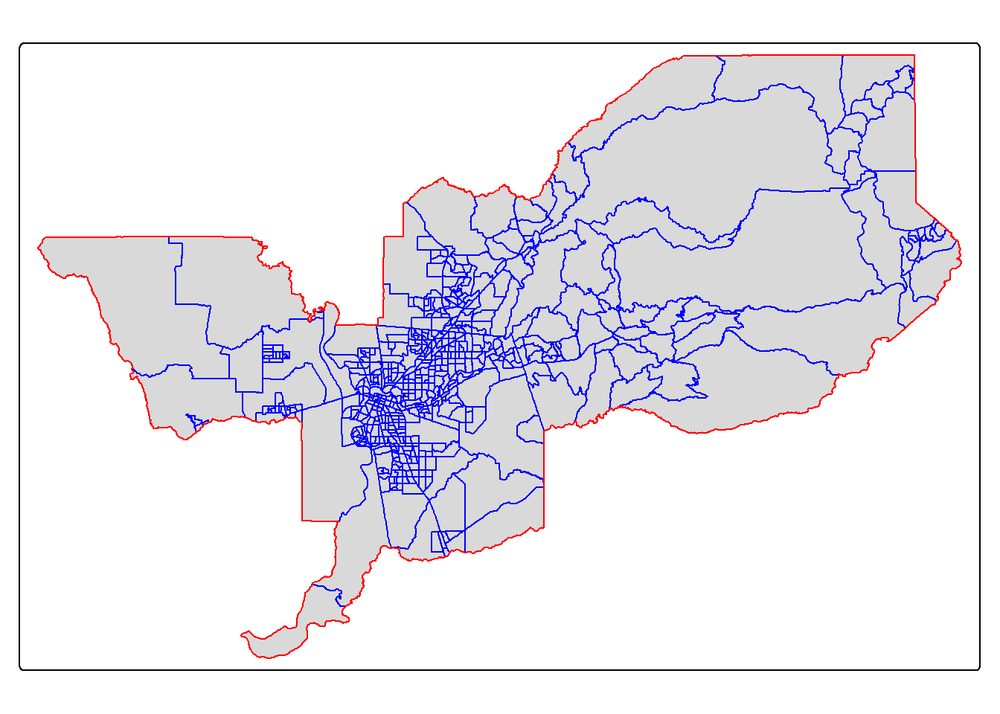
Looking much better! Now, if we look at sac.metro.tracts.w’s
attribute table, you’ll see it includes all the variables from both
ca.tracts and sac.metro. We don’t need these
variables, so use select() to eliminate them. You’ll also
notice that if variables from two data sets share the same name, R will
keep both and attach a .x and .y to the end. For
example, GEOID was found in both ca.tracts and
sac.metro, so R named one GEOID.x and the other that
was merged in was named GEOID.y.
Mapping in R
ggplot
OK, so now we’ve talked a little about how to bring in and manipulate vector polygon data, let’s do some mapping and create some choropleth maps. We can do this with the ggplot package, the tmap package, and the leaflet package (which we won’t cover now, but it’s very cool for interactive maps). Let’s start with ggplot.
ggplot
Because sf is tidy friendly, it is no surprise we
can use the tidyverse plotting function
ggplot() to make maps. We already received an introduction
to ggplot() in Lab 3. Recall
its basic structure:
ggplot(data = <DATA>) +
<GEOM_FUNCTION>(mapping = aes(x, y)) +
<OPTIONS>()
In mapping, geom_sf() is
<GEOM_FUNCTION>(). Unlike with functions like
geom_histogram() and geom_boxplot(), we don’t
specify an x and y axis. Instead you use fill if you want
to map a variable or color to just map boundaries.
Let’s use ggplot() to make a choropleth map. We need to
specify a numeric variable in the fill = argument within
geom_sf(). Here we map tract-level median household income
in the Sacramento metro area.
ggplot(data = sac.metro.tracts.w) +
geom_sf(aes(fill = medincE))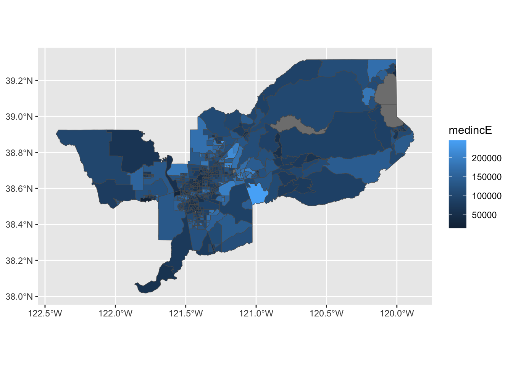
We can also specify a title (as well as subtitles and captions) using
the labs() function.
ggplot(data = sac.metro.tracts.w) +
geom_sf(aes(fill = medincE)) +
labs(title = "Median Income Sacramento MSA Tracts") 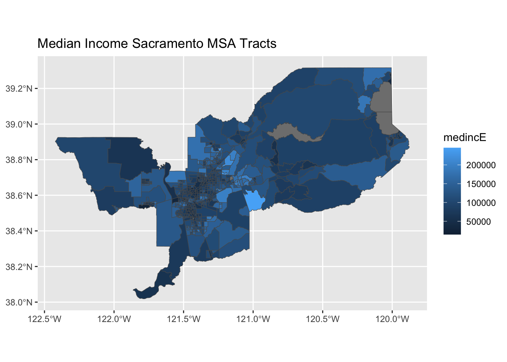
We can make further layout adjustments to the map. Don’t like a blue
scale on the legend? You can change it using the
scale_file_gradient() function. Let’s change it to a white
to red gradient. We can also eliminate the gray tract border colors to
make the fill color distinction clearer. We do this by specifying
color = NA inside geom_sf(). We can also get
rid of the gray background by specifying a basic black and white theme
using theme_bw(). We also added a caption indicating the
source of the data using the captions = parameter within
labs(). We then changed the color to red using labels for
low= and high=, and we added a name to our
legend with `name=’.
ggplot(data = sac.metro.tracts.w) +
geom_sf(aes(fill = medincE), color = NA) +
scale_fill_gradient(low= "white", high = "red", na.value ="gray", name = "Median Income") +
labs(title = "Median Income Sacramento MSA Tracts",
caption = "Source: American Community Survey") +
theme_bw()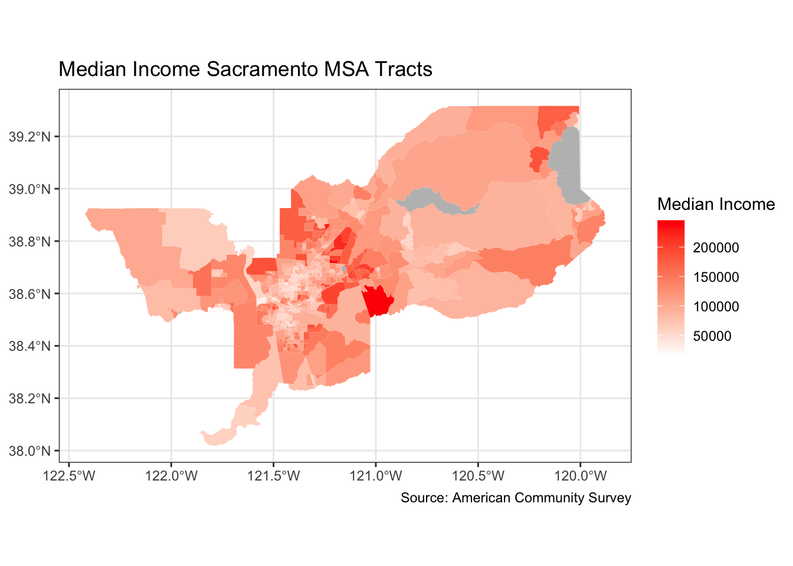
Dare I say, we are ready for the New York Times with this map!
Points on top of polygons
OK, now that we have mapped points and mapped polygons, let’s put them both together! First, we are going to bring in our old friend CAdata from last week’s lab.
data(CAdata)
ca_pts <- CAdata
summary(ca_pts)## time event X Y AGE INS
## Min. : 0.004068 Min. :0.0000 Min. :1811375 Min. :-241999 Min. :25.00 Mcd: 431
## 1st Qu.: 1.931247 1st Qu.:0.0000 1st Qu.:2018363 1st Qu.: -94700 1st Qu.:53.00 Mcr:1419
## Median : 4.749980 Median :1.0000 Median :2325084 Median : -60386 Median :62.00 Mng:2304
## Mean : 6.496130 Mean :0.6062 Mean :2230219 Mean : 87591 Mean :61.28 Oth: 526
## 3rd Qu.: 9.609031 3rd Qu.:1.0000 3rd Qu.:2380230 3rd Qu.: 318280 3rd Qu.:71.00 Uni: 168
## Max. :24.997764 Max. :1.0000 Max. :2705633 Max. : 770658 Max. :80.00 Unk: 152ca_pts <- st_as_sf(CAdata, coords=c("X","Y"))
ca_proj <- "+proj=lcc +lat_1=40 +lat_2=41.66666666666666
+lat_0=39.33333333333334 +lon_0=-122 +x_0=2000000
+y_0=500000.0000000002 +ellps=GRS80
+datum=NAD83 +units=m +no_defs"
#Set CRS
ca_pts_crs <- st_set_crs(ca_pts, ca_proj)
This time, we will map those points with ggplot.
ggplot(data = ca_pts_crs) +
geom_sf(fill = "black") +
labs(title = "Study Participants",
caption = "Source: Ovarian Cancer Cases") +
theme_bw()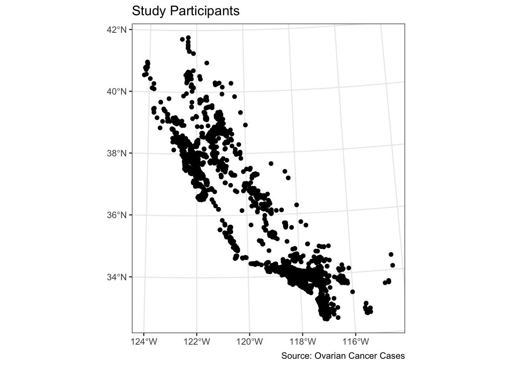
We can overlay the points over Sacramento tracts to give the
locations some perspective. Here, you add two geom_sf()
arguments for the tracts and the cancer cases.
ggplot() +
geom_sf(data = sac.metro.tracts.w) +
geom_sf(data = ca_pts_crs, fill = "black") +
labs(title = "Study Participants",
caption = "Source: Ovarian Cancer Cases") +
theme_bw()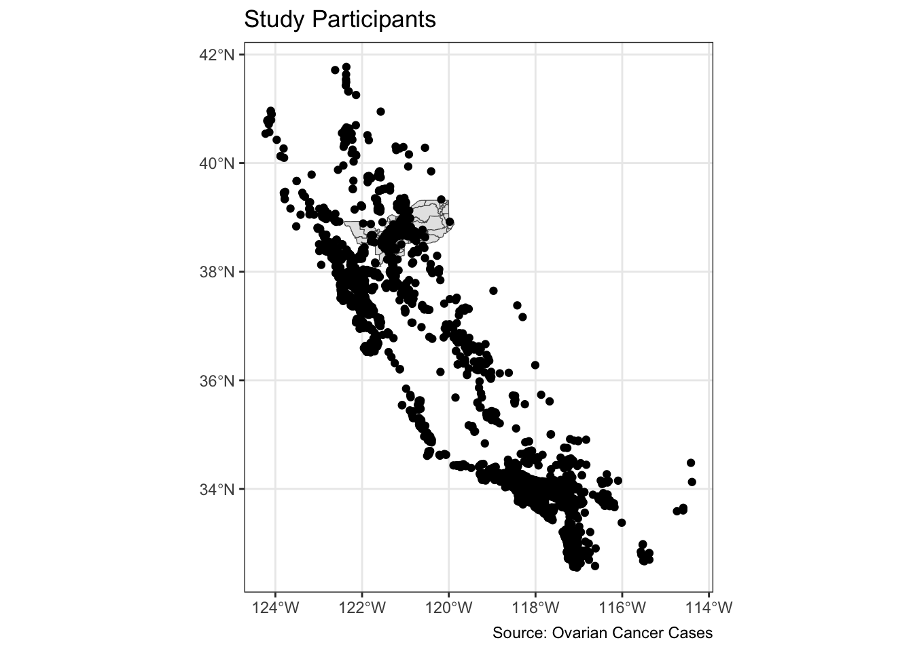
Hmmm. That doesn’t look great. We have lots of cases outside of Sacramento. Let’s filter out to just pick cases within the Sacramento area.
ca_pts_crs.w <- st_join(ca_pts_crs, sac.metro.tracts.w, join = st_within, left=FALSE)
Ooof. That doesn’t work. It says our
st_crs(x) == st_crs(y) is not TRUE. That means our
Coordinate Reference Systems are not matching! Let’s transform our
cancer dataset ca_pts_crs.w to match the CRS for
sac.metro.tracts.w with one easy step using
st_transform:
#check crs of each dataset
st_crs(ca_pts_crs)## Coordinate Reference System:
## User input: +proj=lcc +lat_1=40 +lat_2=41.66666666666666
## +lat_0=39.33333333333334 +lon_0=-122 +x_0=2000000
## +y_0=500000.0000000002 +ellps=GRS80
## +datum=NAD83 +units=m +no_defs
## wkt:
## PROJCRS["unknown",
## BASEGEOGCRS["unknown",
## DATUM["North American Datum 1983",
## ELLIPSOID["GRS 1980",6378137,298.257222101,
## LENGTHUNIT["metre",1]],
## ID["EPSG",6269]],
## PRIMEM["Greenwich",0,
## ANGLEUNIT["degree",0.0174532925199433],
## ID["EPSG",8901]]],
## CONVERSION["unknown",
## METHOD["Lambert Conic Conformal (2SP)",
## ID["EPSG",9802]],
## PARAMETER["Latitude of false origin",39.3333333333333,
## ANGLEUNIT["degree",0.0174532925199433],
## ID["EPSG",8821]],
## PARAMETER["Longitude of false origin",-122,
## ANGLEUNIT["degree",0.0174532925199433],
## ID["EPSG",8822]],
## PARAMETER["Latitude of 1st standard parallel",40,
## ANGLEUNIT["degree",0.0174532925199433],
## ID["EPSG",8823]],
## PARAMETER["Latitude of 2nd standard parallel",41.6666666666667,
## ANGLEUNIT["degree",0.0174532925199433],
## ID["EPSG",8824]],
## PARAMETER["Easting at false origin",2000000,
## LENGTHUNIT["metre",1],
## ID["EPSG",8826]],
## PARAMETER["Northing at false origin",500000,
## LENGTHUNIT["metre",1],
## ID["EPSG",8827]]],
## CS[Cartesian,2],
## AXIS["(E)",east,
## ORDER[1],
## LENGTHUNIT["metre",1,
## ID["EPSG",9001]]],
## AXIS["(N)",north,
## ORDER[2],
## LENGTHUNIT["metre",1,
## ID["EPSG",9001]]]]st_crs(sac.metro.tracts.w)## Coordinate Reference System:
## User input: NAD83
## wkt:
## GEOGCRS["NAD83",
## DATUM["North American Datum 1983",
## ELLIPSOID["GRS 1980",6378137,298.257222101,
## LENGTHUNIT["metre",1]]],
## PRIMEM["Greenwich",0,
## ANGLEUNIT["degree",0.0174532925199433]],
## CS[ellipsoidal,2],
## AXIS["latitude",north,
## ORDER[1],
## ANGLEUNIT["degree",0.0174532925199433]],
## AXIS["longitude",east,
## ORDER[2],
## ANGLEUNIT["degree",0.0174532925199433]],
## ID["EPSG",4269]]#create new dataset with transformed CRS
ca_pts_crs.transformed <- st_transform(ca_pts_crs,st_crs(sac.metro.tracts.w))
st_crs(ca_pts_crs.transformed )## Coordinate Reference System:
## User input: NAD83
## wkt:
## GEOGCRS["NAD83",
## DATUM["North American Datum 1983",
## ELLIPSOID["GRS 1980",6378137,298.257222101,
## LENGTHUNIT["metre",1]]],
## PRIMEM["Greenwich",0,
## ANGLEUNIT["degree",0.0174532925199433]],
## CS[ellipsoidal,2],
## AXIS["latitude",north,
## ORDER[1],
## ANGLEUNIT["degree",0.0174532925199433]],
## AXIS["longitude",east,
## ORDER[2],
## ANGLEUNIT["degree",0.0174532925199433]],
## ID["EPSG",4269]]
OK, let’s try this again!
ca_pts_crs.w <- st_join(ca_pts_crs.transformed, sac.metro.tracts.w, join = st_within, left=FALSE)It worked! OK, now let’s try our map again.
ggplot() +
geom_sf(data = sac.metro.tracts.w) +
geom_sf(data = ca_pts_crs.w, fill = "black") +
labs(title = "Study Participants",
caption = "Source: Ovarian Cancer Cases") +
theme_bw()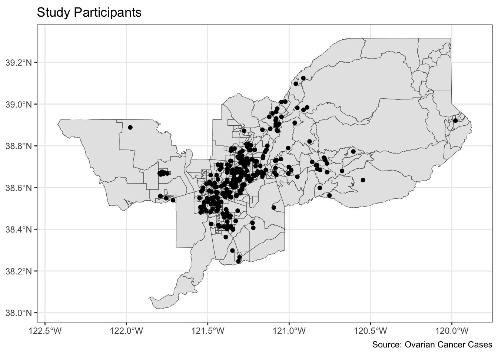
Alright, who’s ready for a challenge? Let’s put it all together in one nice map.
ggplot() +
geom_sf(data = sac.metro.tracts.w, aes(fill = medincE), color = NA) +
scale_fill_gradient(low= "white", high = "red", na.value ="gray", name = "Median Income") +
geom_sf(data = ca_pts_crs.w, fill = "black") +
labs(title = "Study Participants Overlaid with Median Income of Sacramento Tracts",
caption = "Source: American Community Survey and Ovarian Cancer Cases") +
theme_bw()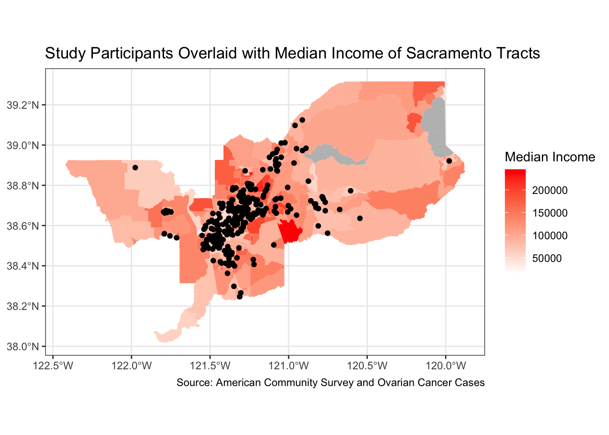
Can I just say, you’re very impressive. Well done!
tmap
Whether you prefer tmap or ggplot is up to you, but I find that tmap has some benefits, so let’s focus on its mapping functions next.
tmap uses the same layered logic as
ggplot. As we saw last week, the initial command is
tm_shape(), which specifies the geography to which the
mapping is applied. You then build on tm_shape() by adding
one or more elements such as tm_polygons() for polygons,
tm_borders() for lines, and tm_dots() for
points. All additional functions take on the form of tm_.
Check the full list of tm_ elements here.
Choropleth maps in tmap
Let’s make a static choropleth map of median household income in Sacramento MSA just like we did above, but this time in tmap.
tm_shape(sac.metro.tracts.w) +
tm_polygons(fill = "medincE",
fill.scale = tm_scale_intervals(style = "quantile"))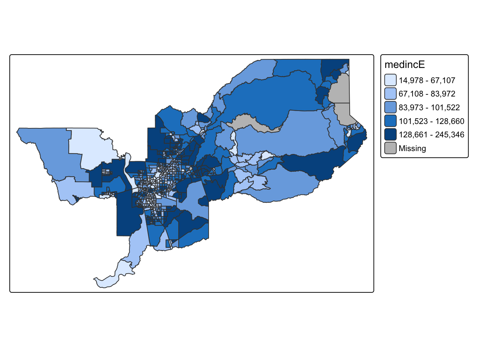
We first put the dataset sac.metro.tracts.w inside
tm_shape(). Because you are plotting polygons, you use
tm_polygons() next. The argument
fill = "medincE" tells R to shade (or color) the tracts by
the variable medincE. The argument
fill.scale = tm_scale_intervals(style = "quantile")" tells
R to break up the shading into quantiles, or equal groups of 5 as a
default. I find that this is where tmap offers a
distinct advantage over ggplot in that users have
greater control over the legend and bin breaks. tmap
allows users to specify algorithms to automatically create breaks with
the style argument. You can also change the number of breaks by setting
n=. The default is n=5. Rather than quintiles,
you can show quartiles using n=4. I’m feeling crazy. Let’s
do it.
tm_shape(sac.metro.tracts.w) +
tm_polygons(fill = "medincE",
fill.scale = tm_scale_intervals(style = "quantile", n=4))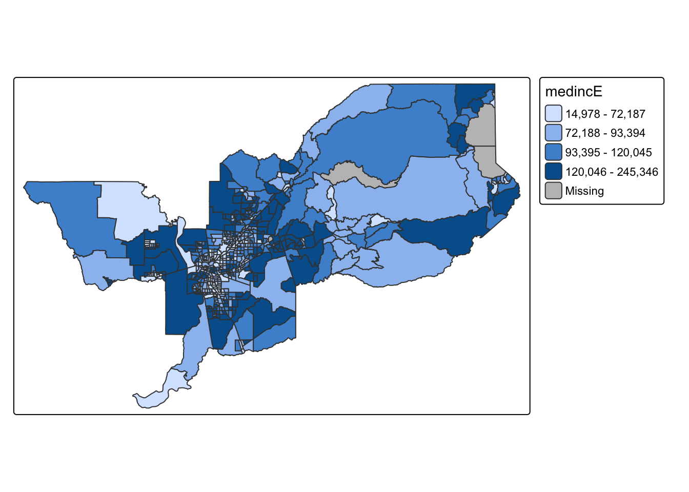
Check out this link for more on available classification styles in tmap.
The tm_polygons() command is a wrapper around two other
functions, tm_fill() and tm_borders().
tm_fill() controls the contents of the polygons (color,
classification, etc.), while tm_borders() does the same for
the polygon outlines.
For example, using the same shape (but no variable), we obtain the
outlines of the neighborhoods from the tm_borders()
command.
tm_shape(sac.metro.tracts.w) +
tm_borders()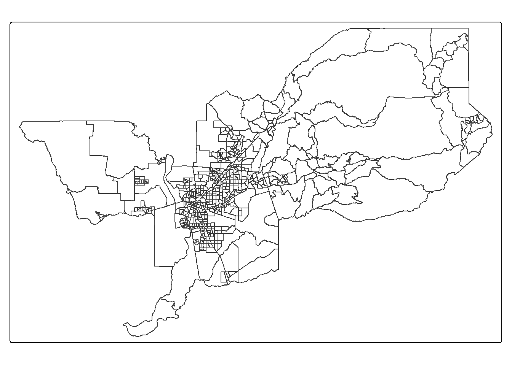
Similarly, we obtain a choropleth map without the polygon outlines
when we just use the tm_fill() command.
tm_shape(sac.metro.tracts.w) +
tm_fill("medincE")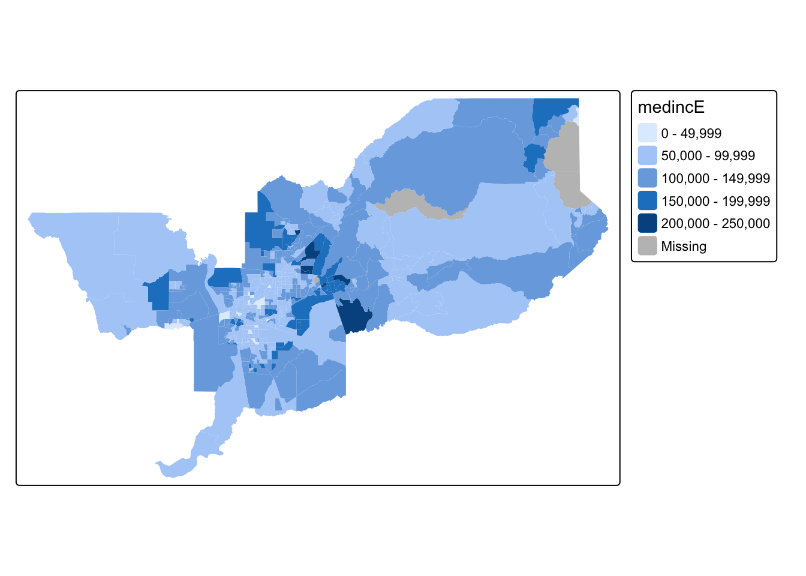
When we combine the two commands, we obtain the same map as with tm_polygons() (this illustrates how in R one can often obtain the same result in a number of different ways). Try this on your own.
Color scheme
The argument values = defines the color ranges
associated with the bins and determined by the style
arguments. Several built-in palettes are contained in
tmap. For example, using values = "Reds"
would yield the following map for our example.
tm_shape(sac.metro.tracts.w) +
tm_polygons(fill = "medincE",
fill.scale = tm_scale_intervals(style = "quantile",
values = "Reds")) Under the hood, “Reds” refers to one of the color
schemes supported by the RColorBrewer package (see
below).
In addition to the built-in palettes, customized color ranges can be
created by specifying a vector with the desired colors as anchors. This
will create a spectrum of colors in the map that range between the
colors specified in the vector. For instance, if we used
c(“red”, “blue”), the color spectrum would move from red to
purple, then to blue, with in between shades. In our example:
tm_shape(sac.metro.tracts.w) +
tm_polygons(fill = "medincE",
fill.scale = tm_scale_intervals(style = "quantile",
values = c("red","blue"))) 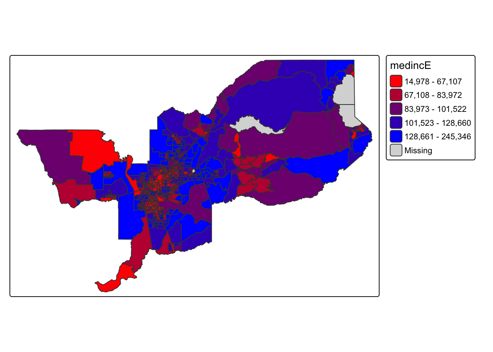
Not exactly a pretty picture. In order to capture a diverging scale,
we insert “white” in between red and blue.
tm_shape(sac.metro.tracts.w) +
tm_polygons(fill = "medincE",
fill.scale = tm_scale_intervals(style = "quantile",
values = c("red","white", "blue"))) 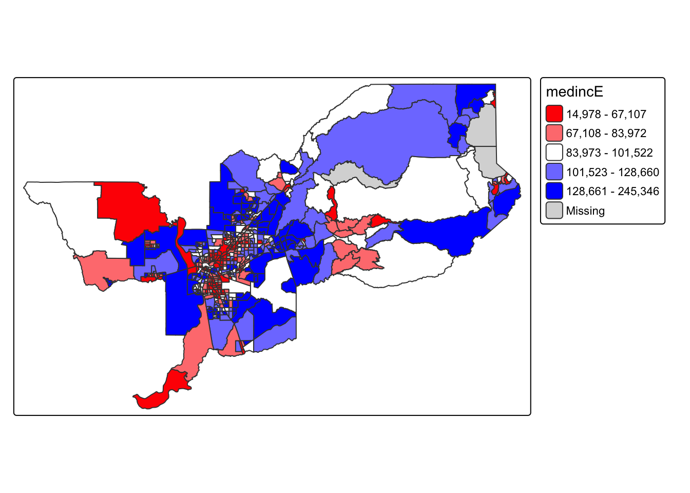
A preferred approach to select a color palette is to chose one of the schemes contained in the RColorBrewer package. These are based on the research of cartographer Cynthia Brewer (see the colorbrewer2 website for details). ColorBrewer makes a distinction between sequential scales (for a scale that goes from low to high), diverging scales (to highlight how values differ from a central tendency), and qualitative scales (for categorical variables). For each scale, a series of single hue and multi-hue scales are suggested. In the RColorBrewer package, these are referred to by a name (e.g., the “Reds” palette we used above is an example). The full list is contained in the RColorBrewer documentation.
There are two very useful commands in this package. One sets a color palette by specifying its name and the number of desired categories. The result is a character vector with the hex codes of the corresponding colors.
For example, we select a sequential color scheme going from blue to
green, as BuGn, by means of the command
brewer.pal, with the number of categories (6) and the
scheme as arguments. The resulting vector contains the HEX codes for the
colors.
brewer.pal(6,"BuGn")## [1] "#EDF8FB" "#CCECE6" "#99D8C9" "#66C2A4" "#2CA25F" "#006D2C"
Using this palette in our map yields the following result.
tm_shape(sac.metro.tracts.w) +
tm_polygons(fill = "medincE",
fill.scale = tm_scale_intervals(style = "quantile",
values="brewer.bu_gn")) 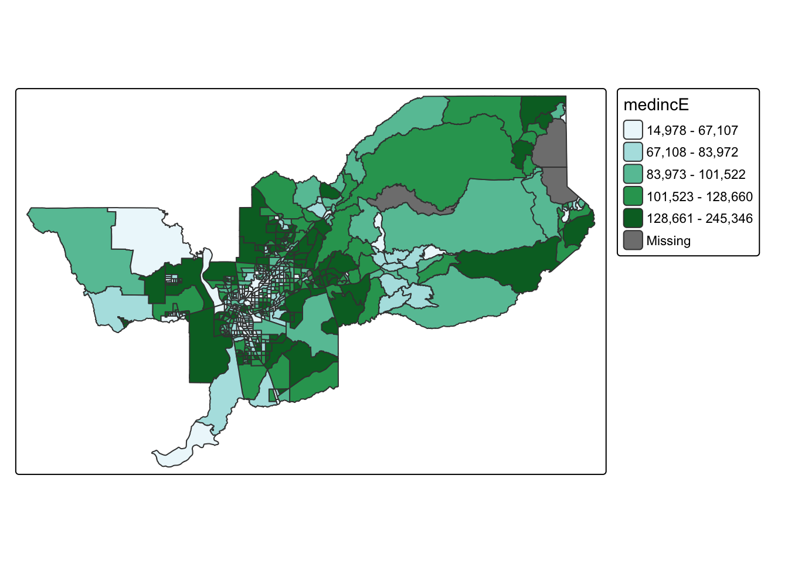
The command display.brewer.pal() allows us to explore
different color schemes before applying them to a map. For example:
display.brewer.pal(6,"BuGn")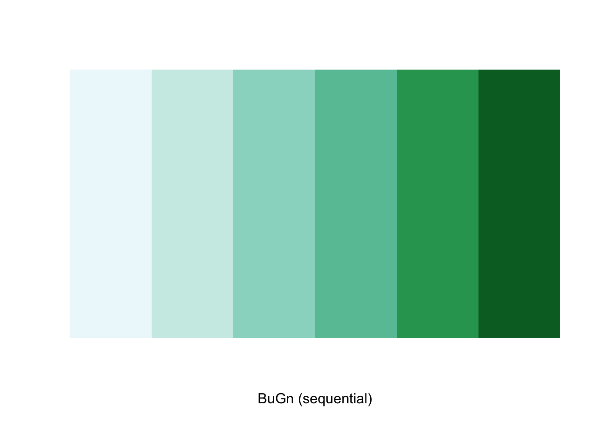
Legend
There are many options to change the formatting of the legend. The
automatic title for the legend is not that attractive, since it is
simply the variable name. This can be customized by setting the
title argument in tm_legend().
tm_shape(sac.metro.tracts.w) +
tm_polygons(fill = "medincE",
fill.scale = tm_scale_intervals(style = "quantile",
values = "brewer.reds"),
fill.legend = tm_legend(title = "Median Income")) 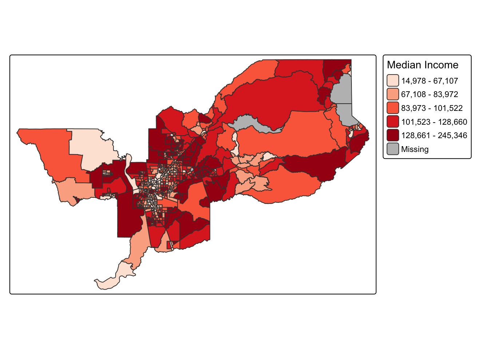
Another important aspect of the legend is its positioning. This is
handled through the tm_layout() function. This function has
a vast number of options, as detailed in the documentation.
There are also specialized subsets of layout functions, focused on
specific aspects of the map, such as tm_legend(),
tm_style() and tm_format(). We illustrate the
positioning of the legend.
Often, the default location of the legend is appropriate, but
sometimes further control is needed. The legend.position
argument to the tm_layout function moves the legend around
the map, and it takes a vector of two string variables that determine
both the horizontal position (“left”, “right”, or “center”) and the
vertical position (“top”, “bottom”, or “center”).
For example, if we would want to move the legend to the bottom-right position, we would use the following set of commands.
tm_shape(sac.metro.tracts.w) +
tm_polygons(fill = "medincE",
fill.scale = tm_scale_intervals(style = "quantile",
values = "brewer.reds"),
fill.legend = tm_legend(title = "Median Income")) +
tm_layout(legend.position = c("right", "bottom"))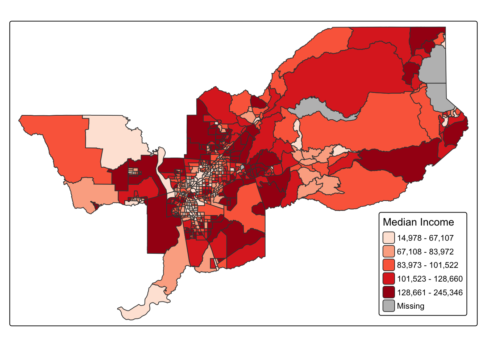
There is also the option to position the legend outside the frame of
the map. This is accomplished by setting legend.outside to
TRUE, and optionally also specify its position by means of
legend.outside.position(). The latter can take the values
“top”, “bottom”, “right”, and “left”.
For example, to position the legend outside and on the right, would be accomplished by the following commands.
tm_shape(sac.metro.tracts.w) +
tm_polygons(fill = "medincE",
fill.scale = tm_scale_intervals(style = "quantile",
values = "brewer.reds"),
fill.legend = tm_legend(title = "Median Income")) +
tm_layout(legend.outside = TRUE, legend.outside.position = "right")
We can also customize the size of the legend, its alignment, font, etc. Check out the documentation for more!
Title
The tm_title() function can be used to set a title for
the map, and specify its position, size, etc. For example, we can set
the text, the size and the
position as in the example below. We made the font size a
bit smaller (0.8) in order not to overwhelm the map, and positioned it
in the top left-hand corner.
tm_shape(sac.metro.tracts.w) +
tm_polygons(fill = "medincE",
fill.scale = tm_scale_intervals(style = "quantile",
values = "brewer.reds"),
fill.legend = tm_legend(title = "Median Income")) +
tm_layout(legend.outside = TRUE, legend.outside.position = "right") +
tm_title(text = "Median Income of Sacramento Tracts",
size = 0.8,
position = c("left","top"))
To have a title appear on top (or on the bottom) of the map, we need
to set the position argument of the tm_title()
function with the associated tm_pos_out(), as illustrated
below (with title.size set to 1.25 to have a larger font).
tm_shape(sac.metro.tracts.w) +
tm_polygons(fill = "medincE",
fill.scale = tm_scale_intervals(style = "quantile",
values = "brewer.reds"),
fill.legend = tm_legend(title = "Median Income")) +
tm_layout(legend.outside = TRUE, legend.outside.position = "right") +
tm_title(text = "Median Income of Sacramento Tracts",
size = 1.25,
position = tm_pos_out("center", "top"))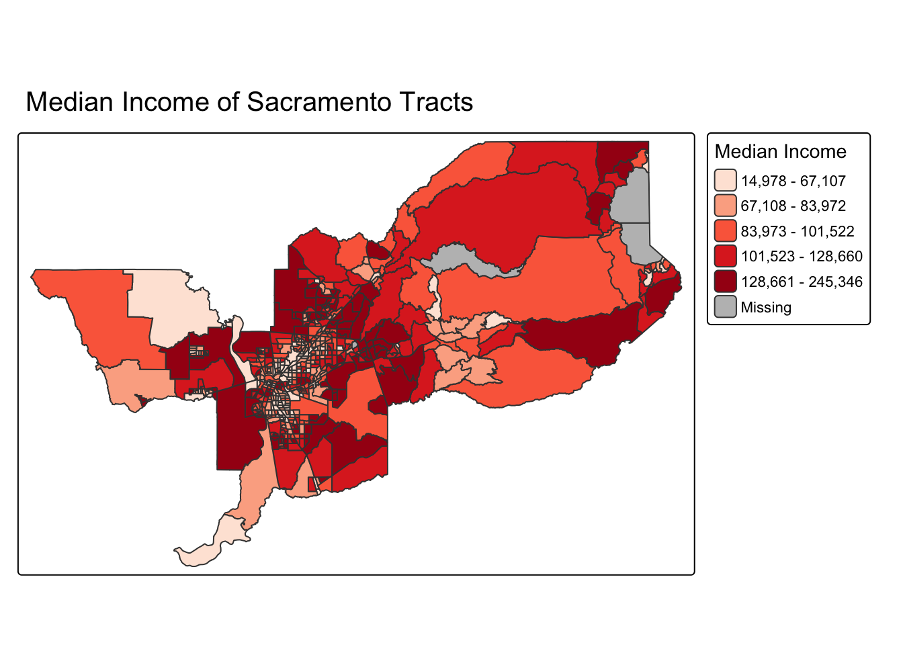
A shortcut to achieve this title position is to use
tm_title_out() instead of tm_title().
Scale bar and arrow
OK this really wouldn’t be a GIS class without talking about one of
the core elements of a map–the good ole scale bar and arrow. Let’s add
these to our map. First, we add the scale bar with
tm_scalebar().
The argument breaks tells R the distances to break up
and end the bar. The argument position places the scale bar
on the bottom left part of the map. Note that the scale is
in miles (we’re in Amurica!). The default is in kilometers (the rest of
the world!), but you can specify the units within
tm_shape() using the argument unit.
text.size scales the size of the bar smaller (below 1) or
larger (above 1).
tm_shape(sac.metro.tracts.w, unit = "mi") +
tm_polygons(fill = "medincE",
fill.scale = tm_scale_intervals(style = "quantile",
values = "brewer.reds"),
fill.legend = tm_legend(title = "Median Income")) +
tm_layout(legend.outside = TRUE, legend.outside.position = "right") +
tm_title_out(text = "Median Income of Sacramento Tracts",
size = 1.25) +
tm_scalebar(breaks = c(0, 5, 10, 20), text.size = 0.75, position = c("left", "bottom")) 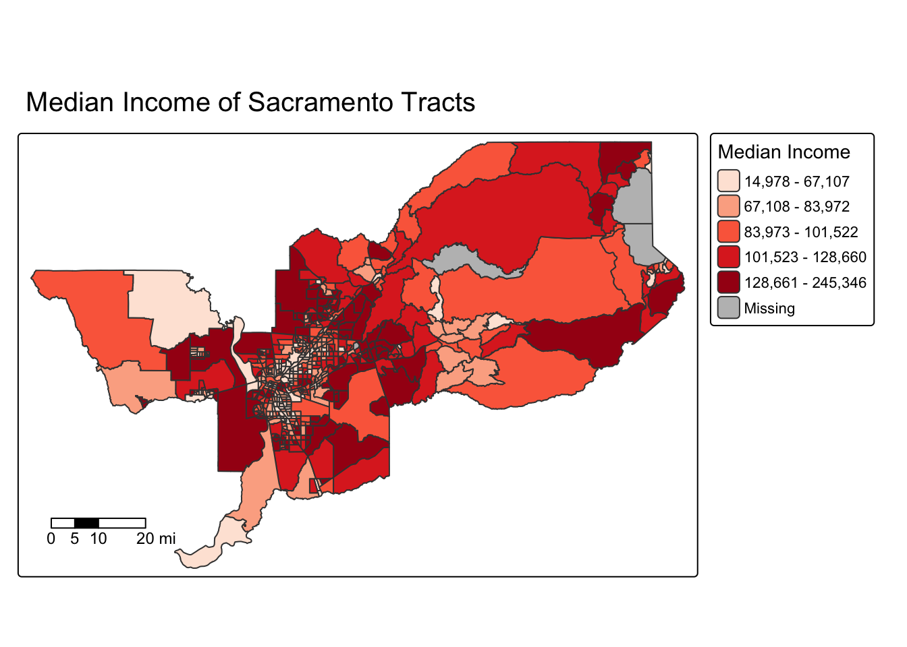
Next let’s spice things up by adding a north arrow, which we can do
using the function tm_compass(). You can control for the
type, size and location of the arrow within this function. I place a
4-star arrow on the bottom right of the map.
tm_shape(sac.metro.tracts.w, unit = "mi") +
tm_polygons(fill = "medincE",
fill.scale = tm_scale_intervals(style = "quantile",
values = "brewer.reds"),
fill.legend = tm_legend(title = "Median Income")) +
tm_layout(legend.outside = TRUE, legend.outside.position = "right") +
tm_title_out(text = "Median Income of Sacramento Tracts",
size = 1.25) +
tm_scalebar(breaks = c(0, 5, 10, 20), text.size = 0.75,
position = c("left", "bottom")) +
tm_compass(type = "4star", position = c("right", "bottom"))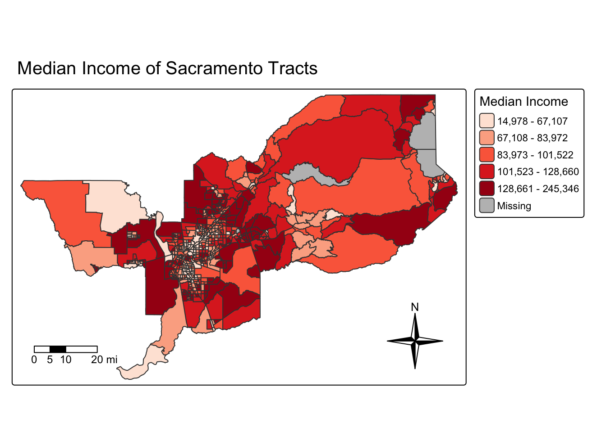
We can also eliminate the frame around the map using the argument
frame = FALSE in tm_layout().
sac.map <- tm_shape(sac.metro.tracts.w, unit = "mi") +
tm_polygons(fill = "medincE",
fill.scale = tm_scale_intervals(style = "quantile",
values = "brewer.reds"),
fill.legend = tm_legend(title = "Median Income")) +
tm_layout(frame = FALSE,
legend.outside = TRUE, legend.outside.position = "right") +
tm_title(text = "Median Income of Sacramento Tracts",
size = 1.25) +
tm_scalebar(breaks = c(0, 5, 10, 20), text.size = 0.75, position = c("left", "bottom")) +
tm_compass(type = "4star", position = c("right", "bottom"))
sac.map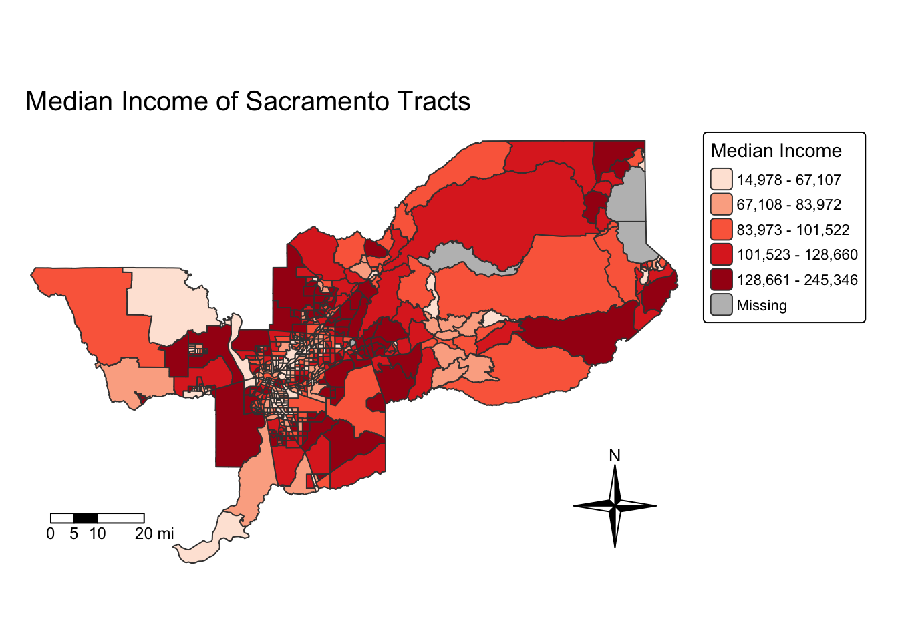
Note that I saved the map into an object called sac.map. R
is an object-oriented program, so everything you make in R are objects
that can be saved for future manipulation. This includes maps. And
future manipulations of a saved map includes adding more
tm_* functions to the saved object, such as
sac.map + tm_layout(your changes here). Check the help
documentation for tm_layout() to see the complete list of
settings.
Saving maps
You can save your maps a few ways. 1. On the plotting screen where
the map is shown, click on Export and save it as either an image or pdf
file. 2. Use the function tmap_save()
For option 2, we can save the map object sac.map as such:
tmap_save(sac.map, "sac_city_inc.jpg")Specify the tmap object and a filename with an extension. It supports .pdf, .eps, .svg, .wmf, .png, .jpg, .bmp and .tiff. The default is .png. Also make sure you’ve set your working directory to the folder that you want your map to be saved in.
Making a map with CDC Places data
OK, do we have energy for one more example? Let’s bring in data from the CDC Places dataset. This is an incredible resource to access data on the CDC’s Behavioral Risk Factor and Surveillance System (BRFSS), as well as social determinants of health data from American Community Survey. I’ve already downloaded California Census tract data on the “% of adults reporting no leisure-time physical activity”. Let’s bring this in and take a look at it!
places_ca_lpa <- read_csv("https://raw.githubusercontent.com/pjames-ucdavis/SPH215/refs/heads/main/places_ca_lpa.csv")## Rows: 9070 Columns: 24
## ── Column specification ──────────────────────────────────────────────────────────────────────────────────────────────────
## Delimiter: ","
## chr (16): StateAbbr, StateDesc, CountyName, CountyFIPS, LocationName, DataSource, Category, Measure, Data_Value_Unit, ...
## dbl (6): Year, Data_Value, Low_Confidence_Limit, High_Confidence_Limit, TotalPopulation, TotalPop18plus
## lgl (2): Data_Value_Footnote_Symbol, Data_Value_Footnote
##
## ℹ Use `spec()` to retrieve the full column specification for this data.
## ℹ Specify the column types or set `show_col_types = FALSE` to quiet this message.glimpse(places_ca_lpa)## Rows: 9,070
## Columns: 24
## $ Year <dbl> 2022, 2022, 2022, 2022, 2022, 2022, 2022, 2022, 2022, 2022, 2022, 2022, 2022, 2022, 2…
## $ StateAbbr <chr> "CA", "CA", "CA", "CA", "CA", "CA", "CA", "CA", "CA", "CA", "CA", "CA", "CA", "CA", "…
## $ StateDesc <chr> "California", "California", "California", "California", "California", "California", "…
## $ CountyName <chr> "Orange", "Riverside", "Riverside", "Sacramento", "San Diego", "San Diego", "San Dieg…
## $ CountyFIPS <chr> "06059", "06065", "06065", "06067", "06073", "06073", "06073", "06073", "06081", "060…
## $ LocationName <chr> "06059063010", "06065042509", "06065042519", "06067007701", "06073003304", "060730083…
## $ DataSource <chr> "BRFSS", "BRFSS", "BRFSS", "BRFSS", "BRFSS", "BRFSS", "BRFSS", "BRFSS", "BRFSS", "BRF…
## $ Category <chr> "Health Risk Behaviors", "Health Risk Behaviors", "Health Risk Behaviors", "Health Ri…
## $ Measure <chr> "No leisure-time physical activity among adults", "No leisure-time physical activity …
## $ Data_Value_Unit <chr> "%", "%", "%", "%", "%", "%", "%", "%", "%", "%", "%", "%", "%", "%", "%", "%", "%", …
## $ Data_Value_Type <chr> "Crude prevalence", "Crude prevalence", "Crude prevalence", "Crude prevalence", "Crud…
## $ Data_Value <dbl> 13.1, 33.6, 40.2, 26.6, 32.9, 12.9, 18.7, 22.1, 20.9, 22.3, 11.6, 17.1, 31.2, 12.8, 2…
## $ Data_Value_Footnote_Symbol <lgl> NA, NA, NA, NA, NA, NA, NA, NA, NA, NA, NA, NA, NA, NA, NA, NA, NA, NA, NA, NA, NA, N…
## $ Data_Value_Footnote <lgl> NA, NA, NA, NA, NA, NA, NA, NA, NA, NA, NA, NA, NA, NA, NA, NA, NA, NA, NA, NA, NA, N…
## $ Low_Confidence_Limit <dbl> 11.3, 30.0, 36.3, 23.4, 29.6, 11.2, 16.4, 19.5, 17.7, 19.3, 9.9, 14.8, 27.7, 10.9, 17…
## $ High_Confidence_Limit <dbl> 15.0, 37.4, 44.2, 29.9, 36.3, 14.7, 21.1, 24.8, 24.3, 25.5, 13.6, 19.7, 34.9, 14.8, 2…
## $ TotalPopulation <dbl> 6698, 3460, 1887, 7420, 3601, 4831, 4778, 3550, 4238, 3689, 3216, 4374, 5019, 2110, 4…
## $ TotalPop18plus <dbl> 5354, 2491, 1297, 5680, 2534, 4017, 3684, 2900, 3396, 2858, 2697, 3768, 3767, 1739, 3…
## $ Geolocation <chr> "POINT (-117.8983938 33.6281163)", "POINT (-117.2306582 33.9100514)", "POINT (-117.22…
## $ LocationID <chr> "06059063010", "06065042509", "06065042519", "06067007701", "06073003304", "060730083…
## $ CategoryID <chr> "RISKBEH", "RISKBEH", "RISKBEH", "RISKBEH", "RISKBEH", "RISKBEH", "RISKBEH", "RISKBEH…
## $ MeasureId <chr> "LPA", "LPA", "LPA", "LPA", "LPA", "LPA", "LPA", "LPA", "LPA", "LPA", "LPA", "LPA", "…
## $ DataValueTypeID <chr> "CrdPrv", "CrdPrv", "CrdPrv", "CrdPrv", "CrdPrv", "CrdPrv", "CrdPrv", "CrdPrv", "CrdP…
## $ Short_Question_Text <chr> "Physical Inactivity", "Physical Inactivity", "Physical Inactivity", "Physical Inacti…
Interesting stuff. Looks like the values we care about are stores in a column called Data_Value and the FIPS code seems to be in LocationName. Let’s go ahead and rename LocationName and then see if we can join this data with our Census tract data ca.tracts.
places_ca_lpa<-rename(places_ca_lpa, GEOID = LocationName)
glimpse(places_ca_lpa)## Rows: 9,070
## Columns: 24
## $ Year <dbl> 2022, 2022, 2022, 2022, 2022, 2022, 2022, 2022, 2022, 2022, 2022, 2022, 2022, 2022, 2…
## $ StateAbbr <chr> "CA", "CA", "CA", "CA", "CA", "CA", "CA", "CA", "CA", "CA", "CA", "CA", "CA", "CA", "…
## $ StateDesc <chr> "California", "California", "California", "California", "California", "California", "…
## $ CountyName <chr> "Orange", "Riverside", "Riverside", "Sacramento", "San Diego", "San Diego", "San Dieg…
## $ CountyFIPS <chr> "06059", "06065", "06065", "06067", "06073", "06073", "06073", "06073", "06081", "060…
## $ GEOID <chr> "06059063010", "06065042509", "06065042519", "06067007701", "06073003304", "060730083…
## $ DataSource <chr> "BRFSS", "BRFSS", "BRFSS", "BRFSS", "BRFSS", "BRFSS", "BRFSS", "BRFSS", "BRFSS", "BRF…
## $ Category <chr> "Health Risk Behaviors", "Health Risk Behaviors", "Health Risk Behaviors", "Health Ri…
## $ Measure <chr> "No leisure-time physical activity among adults", "No leisure-time physical activity …
## $ Data_Value_Unit <chr> "%", "%", "%", "%", "%", "%", "%", "%", "%", "%", "%", "%", "%", "%", "%", "%", "%", …
## $ Data_Value_Type <chr> "Crude prevalence", "Crude prevalence", "Crude prevalence", "Crude prevalence", "Crud…
## $ Data_Value <dbl> 13.1, 33.6, 40.2, 26.6, 32.9, 12.9, 18.7, 22.1, 20.9, 22.3, 11.6, 17.1, 31.2, 12.8, 2…
## $ Data_Value_Footnote_Symbol <lgl> NA, NA, NA, NA, NA, NA, NA, NA, NA, NA, NA, NA, NA, NA, NA, NA, NA, NA, NA, NA, NA, N…
## $ Data_Value_Footnote <lgl> NA, NA, NA, NA, NA, NA, NA, NA, NA, NA, NA, NA, NA, NA, NA, NA, NA, NA, NA, NA, NA, N…
## $ Low_Confidence_Limit <dbl> 11.3, 30.0, 36.3, 23.4, 29.6, 11.2, 16.4, 19.5, 17.7, 19.3, 9.9, 14.8, 27.7, 10.9, 17…
## $ High_Confidence_Limit <dbl> 15.0, 37.4, 44.2, 29.9, 36.3, 14.7, 21.1, 24.8, 24.3, 25.5, 13.6, 19.7, 34.9, 14.8, 2…
## $ TotalPopulation <dbl> 6698, 3460, 1887, 7420, 3601, 4831, 4778, 3550, 4238, 3689, 3216, 4374, 5019, 2110, 4…
## $ TotalPop18plus <dbl> 5354, 2491, 1297, 5680, 2534, 4017, 3684, 2900, 3396, 2858, 2697, 3768, 3767, 1739, 3…
## $ Geolocation <chr> "POINT (-117.8983938 33.6281163)", "POINT (-117.2306582 33.9100514)", "POINT (-117.22…
## $ LocationID <chr> "06059063010", "06065042509", "06065042519", "06067007701", "06073003304", "060730083…
## $ CategoryID <chr> "RISKBEH", "RISKBEH", "RISKBEH", "RISKBEH", "RISKBEH", "RISKBEH", "RISKBEH", "RISKBEH…
## $ MeasureId <chr> "LPA", "LPA", "LPA", "LPA", "LPA", "LPA", "LPA", "LPA", "LPA", "LPA", "LPA", "LPA", "…
## $ DataValueTypeID <chr> "CrdPrv", "CrdPrv", "CrdPrv", "CrdPrv", "CrdPrv", "CrdPrv", "CrdPrv", "CrdPrv", "CrdP…
## $ Short_Question_Text <chr> "Physical Inactivity", "Physical Inactivity", "Physical Inactivity", "Physical Inacti…ca.tracts.lpa <- ca.tracts %>%
left_join(places_ca_lpa, by = "GEOID")
glimpse(ca.tracts.lpa)## Rows: 9,129
## Columns: 41
## $ GEOID <chr> "06001442700", "06001442800", "06037204920", "06037205110", "06037320101", "060372051…
## $ Tract <chr> "Census Tract 4427", "Census Tract 4428", "Census Tract 2049.20", "Census Tract 2051.…
## $ County <chr> "Alameda County", "Alameda County", "Los Angeles County", "Los Angeles County", "Los …
## $ State <chr> "California", "California", "California", "California", "California", "California", "…
## $ tpoprE <dbl> 2998, 3087, 2459, 3690, 3402, 3409, 3490, 8179, 2290, 5998, 4567, 2926, 1856, 3157, 1…
## $ tpoprM <dbl> 475, 386, 387, 446, 438, 624, 605, 350, 509, 1024, 578, 621, 210, 317, 1060, 1048, 70…
## $ nhwhiteE <dbl> 921, 779, 68, 14, 236, 15, 500, 1379, 138, 2685, 2306, 11, 81, 1199, 3907, 0, 534, 17…
## $ nhwhiteM <dbl> 168, 183, 33, 14, 131, 24, 264, 165, 49, 831, 535, 27, 73, 185, 687, 14, 205, 87, 680…
## $ nhblkE <dbl> 119, 12, 49, 8, 65, 8, 17, 2633, 18, 18, 93, 26, 2, 352, 1086, 324, 460, 1009, 264, 3…
## $ nhblkM <dbl> 115, 49, 51, 12, 93, 10, 75, 344, 22, 19, 97, 41, 4, 264, 679, 194, 520, 264, 384, 14…
## $ nhasnE <dbl> 1577, 1671, 0, 0, 123, 70, 1030, 238, 151, 920, 665, 13, 29, 1278, 3465, 4, 576, 0, 5…
## $ nhasnM <dbl> 469, 356, 14, 14, 164, 104, 235, 76, 82, 563, 176, 21, 45, 267, 624, 10, 190, 14, 241…
## $ hispE <dbl> 308, 561, 2331, 3642, 2978, 3303, 1919, 3541, 1932, 2322, 1343, 2795, 1685, 249, 2196…
## $ hispM <dbl> 81, 181, 387, 446, 481, 628, 519, 285, 519, 433, 265, 618, 182, 149, 548, 1050, 491, …
## $ NAME <chr> "Census Tract 4427; Alameda County; California", "Census Tract 4428; Alameda County; …
## $ medincE <dbl> 199154, 180800, 70500, 52262, 110967, 28516, 60703, 148661, 48491, 58650, 110469, 655…
## $ medincM <dbl> 30525, 28293, 15698, 5659, 22149, 3246, 28578, 39223, 19295, 4106, 25299, 50598, 3124…
## $ Year <dbl> 2022, 2022, 2022, 2022, 2022, 2022, 2022, 2022, 2022, 2022, 2022, 2022, 2022, 2022, 2…
## $ StateAbbr <chr> "CA", "CA", "CA", "CA", "CA", "CA", "CA", "CA", "CA", "CA", "CA", "CA", "CA", "CA", "…
## $ StateDesc <chr> "California", "California", "California", "California", "California", "California", "…
## $ CountyName <chr> "Alameda", "Alameda", "Los Angeles", "Los Angeles", "Los Angeles", "Los Angeles", "Lo…
## $ CountyFIPS <chr> "06001", "06001", "06037", "06037", "06037", "06037", "06037", "06037", "06037", "060…
## $ DataSource <chr> "BRFSS", "BRFSS", "BRFSS", "BRFSS", "BRFSS", "BRFSS", "BRFSS", "BRFSS", "BRFSS", "BRF…
## $ Category <chr> "Health Risk Behaviors", "Health Risk Behaviors", "Health Risk Behaviors", "Health Ri…
## $ Measure <chr> "No leisure-time physical activity among adults", "No leisure-time physical activity …
## $ Data_Value_Unit <chr> "%", "%", "%", "%", "%", "%", "%", "%", "%", "%", "%", "%", "%", "%", "%", "%", "%", …
## $ Data_Value_Type <chr> "Crude prevalence", "Crude prevalence", "Crude prevalence", "Crude prevalence", "Crud…
## $ Data_Value <dbl> 14.2, 18.8, 38.2, 38.7, 25.3, 40.2, 30.7, 23.5, 31.1, 27.3, 22.2, 36.0, 34.7, 17.9, 1…
## $ Data_Value_Footnote_Symbol <lgl> NA, NA, NA, NA, NA, NA, NA, NA, NA, NA, NA, NA, NA, NA, NA, NA, NA, NA, NA, NA, NA, N…
## $ Data_Value_Footnote <lgl> NA, NA, NA, NA, NA, NA, NA, NA, NA, NA, NA, NA, NA, NA, NA, NA, NA, NA, NA, NA, NA, N…
## $ Low_Confidence_Limit <dbl> 12.2, 16.3, 35.2, 35.7, 22.9, 37.3, 28.1, 21.2, 28.5, 24.9, 20.1, 33.2, 31.9, 16.1, 1…
## $ High_Confidence_Limit <dbl> 16.6, 21.6, 41.1, 41.7, 27.5, 43.1, 33.2, 25.7, 33.6, 29.5, 24.3, 38.8, 37.4, 19.7, 1…
## $ TotalPopulation <dbl> 3141, 2959, 2537, 3850, 3632, 3858, 3335, 5577, 2312, 5333, 4429, 3009, 2233, 3577, 1…
## $ TotalPop18plus <dbl> 2432, 2359, 1903, 2599, 2822, 2783, 2695, 5555, 1867, 4301, 3585, 2274, 1660, 2923, 6…
## $ Geolocation <chr> "POINT (-122.0081094 37.5371514)", "POINT (-121.9931002 37.5293619)", "POINT (-118.19…
## $ LocationID <chr> "06001442700", "06001442800", "06037204920", "06037205110", "06037320101", "060372051…
## $ CategoryID <chr> "RISKBEH", "RISKBEH", "RISKBEH", "RISKBEH", "RISKBEH", "RISKBEH", "RISKBEH", "RISKBEH…
## $ MeasureId <chr> "LPA", "LPA", "LPA", "LPA", "LPA", "LPA", "LPA", "LPA", "LPA", "LPA", "LPA", "LPA", "…
## $ DataValueTypeID <chr> "CrdPrv", "CrdPrv", "CrdPrv", "CrdPrv", "CrdPrv", "CrdPrv", "CrdPrv", "CrdPrv", "CrdP…
## $ Short_Question_Text <chr> "Physical Inactivity", "Physical Inactivity", "Physical Inactivity", "Physical Inacti…
## $ geometry <MULTIPOLYGON [°]> MULTIPOLYGON (((-122.0172 3..., MULTIPOLYGON (((-122.0023 3..., MULTIPOL…
It worked! OK, now let’s make a map of % of adults reporting no
leisure-time physical activity. We will build on what we’ve learned
above! I’ve also used tm_fill() instead of
tm_polygons() to make it so there are no borders and we can
easily see polygon values in denser concentrations of Census tracts
(e.g., around Sacramento, San Francisco, LA, etc.)
tm_shape(ca.tracts.lpa, unit = "mi") +
tm_fill(fill = "Data_Value",
fill.scale = tm_scale_intervals(style = "quantile",
values = "brewer.reds"),
fill.legend = tm_legend(title = "% Adults No Physical Activity")) +
tm_title_out(text = "% of Adults Reporting No Leisure Time Physical Activity")## [plot mode] fit legend/component: Some legend items or map compoments do not fit well, and are therefore rescaled.
## ℹ Set the tmap option `component.autoscale = FALSE` to disable rescaling.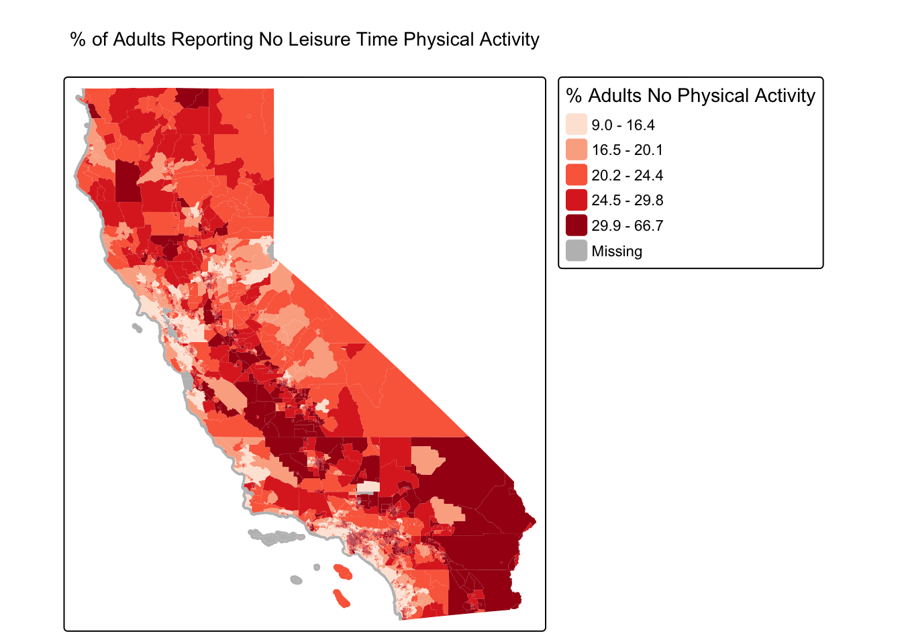
Oooooooo that is one goooood looking map!
You’ve completed your introduction to sf. Whew! Badge? Yes, please, you earned it! Time to celebrate!
Rasters
Raster datasets are simply an array of pixels/cells organized into rows and columns (or a grid) where each cell contains a value representing information, such as temperature, vegetation, land use, air pollution, etc. Raster maps usually represent continuous phenomena such as elevation, temperature, or population density. Discrete features such as soil type or land-cover classes can also be represented in the raster data model. Rasters are aerial photographs, imagery from satellites, Google Street View images, etc. A few things to note.
- Raster datasets are always rectangular (rows x col) similar to
matrices. Irregular boundaries are created by using
NAs. - Rasters have to contain values of the same type (int, float, boolean) throughout the raster, just like matrices and unlike data frames.
- The size of the raster depends on the resolution and the extent of the raster. As such many rasters are large and often cannot be held in memory completely.
The workhorse package for working with rasters in R is the
terra package by Robert Hijmans. terra
has functions for creating, reading, manipulating, and writing raster
data. The package also implements raster algebra and many other
functions for raster data manipulation. The package works with
SpatRaster objects. The rast() function is
used to create these objects.
Typically you will bring in a raster dataset directly from a file. These files come in many different forms, typically .tif, .img, and .grd.
We’ll bring in the file NDVI_rast.tif. The file contains normalized
difference vegetation index (NDVI) data for the Bay Area. These data are
taken from Landsat satellite data that I downloaded from Google Earth
Engine. We use the function rast() to bring in data in
raster form, then take a look at the dataset.
url <- "https://github.com/pjames-ucdavis/SPH215/raw/main/NDVI_rast2.tif"
download.file(url, destfile = "NDVI_rast2.tif", mode = "wb")
NDVI_raster = rast("NDVI_rast2.tif")
## Get summary of raster data
NDVI_raster## class : SpatRaster
## size : 1856, 1485, 1 (nrow, ncol, nlyr)
## resolution : 0.0002694946, 0.0002694946 (x, y)
## extent : -122.6001, -122.1999, 37.59988, 38.10007 (xmin, xmax, ymin, ymax)
## coord. ref. : lon/lat WGS 84 (EPSG:4326)
## source : NDVI_rast2.tif
## name : NDVI_BayArea
## min value : -1
## max value : 0.853357
Does it have a CRS?
## Check CRS
st_crs(NDVI_raster)## Coordinate Reference System:
## User input: WGS 84
## wkt:
## GEOGCRS["WGS 84",
## ENSEMBLE["World Geodetic System 1984 ensemble",
## MEMBER["World Geodetic System 1984 (Transit)"],
## MEMBER["World Geodetic System 1984 (G730)"],
## MEMBER["World Geodetic System 1984 (G873)"],
## MEMBER["World Geodetic System 1984 (G1150)"],
## MEMBER["World Geodetic System 1984 (G1674)"],
## MEMBER["World Geodetic System 1984 (G1762)"],
## MEMBER["World Geodetic System 1984 (G2139)"],
## MEMBER["World Geodetic System 1984 (G2296)"],
## ELLIPSOID["WGS 84",6378137,298.257223563,
## LENGTHUNIT["metre",1]],
## ENSEMBLEACCURACY[2.0]],
## PRIMEM["Greenwich",0,
## ANGLEUNIT["degree",0.0174532925199433]],
## CS[ellipsoidal,2],
## AXIS["geodetic latitude (Lat)",north,
## ORDER[1],
## ANGLEUNIT["degree",0.0174532925199433]],
## AXIS["geodetic longitude (Lon)",east,
## ORDER[2],
## ANGLEUNIT["degree",0.0174532925199433]],
## USAGE[
## SCOPE["Horizontal component of 3D system."],
## AREA["World."],
## BBOX[-90,-180,90,180]],
## ID["EPSG",4326]]
OK we have what looks like a raster. We see our resolution and our extent, and we have a CRS. Nice! Shall we plot this?
## Plot the raster on a map
tmap_mode("plot")## ℹ tmap modes "plot" - "view"NDVI_map <- tm_shape(NDVI_raster) +
tm_raster(col.scale = tm_scale_continuous(),
col.legend = tm_legend(outside = TRUE))
NDVI_map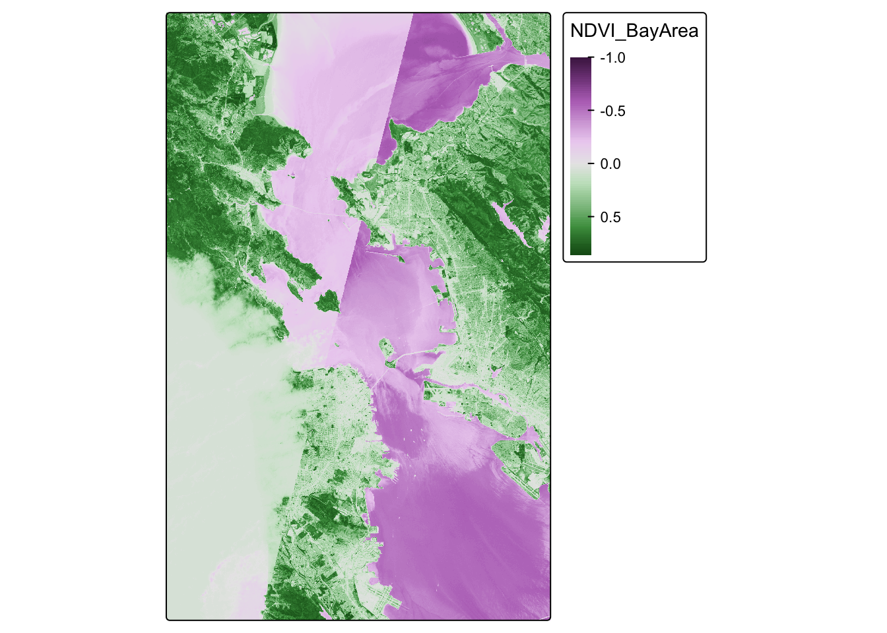
Looks pretty cool! Seems to be the Bay Area, and we have some nice variability. But we let’s see if we can make this fancier.
# palette for plotting
breaks_ndvi <- c(-1,-0.2,-0.1,0,0.025 ,0.05,0.075,0.1,0.125,0.15,0.175,0.2 ,0.25 ,0.3 ,0.35,0.4,0.45,0.5,0.55,0.6,1)
palette_ndvi <- c("#BFBFBF","#DBDBDB","#FFFFE0","#FFFACC","#EDE8B5","#DED99C","#CCC782","#BDB86B","#B0C261","#A3CC59","#91BF52","#80B347","#70A340","#619636","#4F8A2E","#407D24","#306E1C","#216112","#0F540A","#004500")
NDVI_map <- tm_shape(NDVI_raster) +
tm_raster(col.scale = tm_scale_continuous(values = palette_ndvi),
col.legend = tm_legend(title = "NDVI", outside = TRUE))
NDVI_map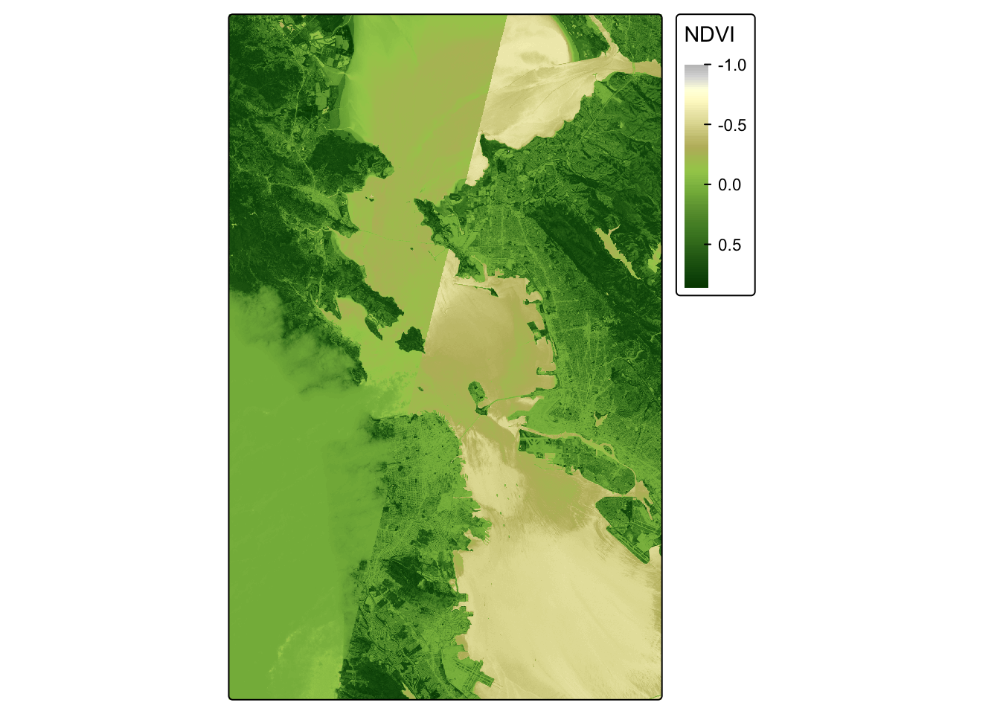
Crop
OK, let’s see if we can crop this to focus on San Francisco. I’ve
googled the lat and long for the area around San Francisco, and I’ll put
these right into my crop() function. I can use the
tmap_mode("view") now because the raster is small enough
for R to make interactive.
sf_rast<-crop(NDVI_raster, ext(-122.55, -122.35, 37.7, 37.83))
tmap_mode("plot")## ℹ tmap modes "plot" - "view"NDVI_sf_map <- tm_shape(sf_rast) +
tm_raster(col.scale = tm_scale_continuous(),
col.legend = tm_legend(title = "NDVI", outside = TRUE))
NDVI_sf_map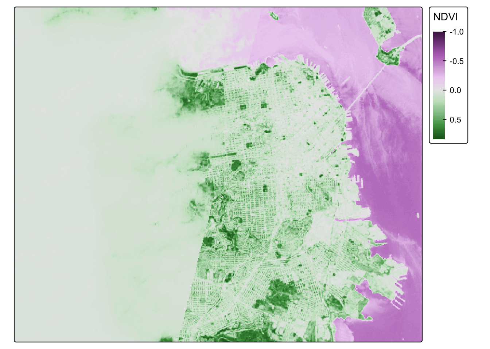
Classify
So negative values of NDVI represent water. Let’s set all negative values to -1, and that will help us to distinguish water from land easier.
sf_rast_neg <- app(sf_rast, fun=function(x){ x[x <= 0] <- -1; return(x)} )
NDVI_sf_map_neg <- tm_shape(sf_rast_neg) +
tm_raster(col.scale = tm_scale_continuous(),
col.legend = tm_legend(title = "NDVI", outside = TRUE))
NDVI_sf_map_neg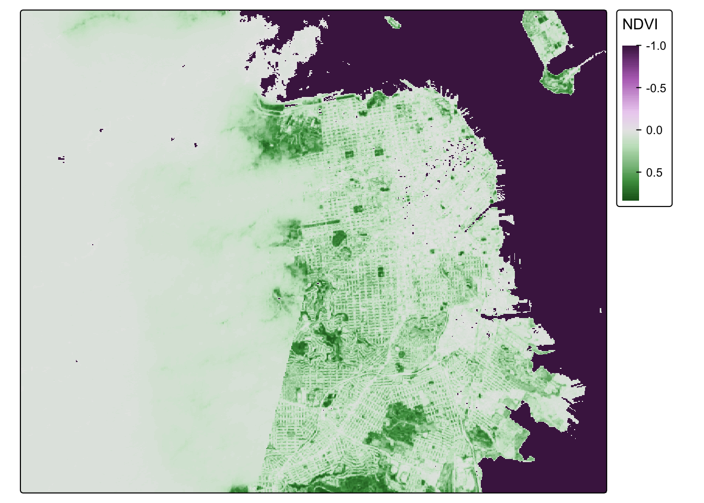
Nice. What do we notice? The coast of San Francisco might have some cloud cover errors! Satellite data isn’t perfect! But the good news is, we’ve learned how to bring in raster data! I think we need a badge!!!!

One last step. Let’s put all our knowledge together and map our old friend CAdata on top of the NDVI data in San Francisco. First, let’s bring in the CAdata dataset on ovarian cancer cases again.
data(CAdata)
ca_pts <- CAdata
ca_proj <- "+proj=lcc +lat_1=40 +lat_2=41.66666666666666
+lat_0=39.33333333333334 +lon_0=-122 +x_0=2000000
+y_0=500000.0000000002 +ellps=GRS80
+datum=NAD83 +units=m +no_defs"
ca_pts <- st_as_sf(CAdata, coords=c("X","Y"), crs=ca_proj)
Let’s check the CRS and compare it to our NDVI dataset.
st_crs(ca_pts)## Coordinate Reference System:
## User input: +proj=lcc +lat_1=40 +lat_2=41.66666666666666
## +lat_0=39.33333333333334 +lon_0=-122 +x_0=2000000
## +y_0=500000.0000000002 +ellps=GRS80
## +datum=NAD83 +units=m +no_defs
## wkt:
## PROJCRS["unknown",
## BASEGEOGCRS["unknown",
## DATUM["North American Datum 1983",
## ELLIPSOID["GRS 1980",6378137,298.257222101,
## LENGTHUNIT["metre",1]],
## ID["EPSG",6269]],
## PRIMEM["Greenwich",0,
## ANGLEUNIT["degree",0.0174532925199433],
## ID["EPSG",8901]]],
## CONVERSION["unknown",
## METHOD["Lambert Conic Conformal (2SP)",
## ID["EPSG",9802]],
## PARAMETER["Latitude of false origin",39.3333333333333,
## ANGLEUNIT["degree",0.0174532925199433],
## ID["EPSG",8821]],
## PARAMETER["Longitude of false origin",-122,
## ANGLEUNIT["degree",0.0174532925199433],
## ID["EPSG",8822]],
## PARAMETER["Latitude of 1st standard parallel",40,
## ANGLEUNIT["degree",0.0174532925199433],
## ID["EPSG",8823]],
## PARAMETER["Latitude of 2nd standard parallel",41.6666666666667,
## ANGLEUNIT["degree",0.0174532925199433],
## ID["EPSG",8824]],
## PARAMETER["Easting at false origin",2000000,
## LENGTHUNIT["metre",1],
## ID["EPSG",8826]],
## PARAMETER["Northing at false origin",500000,
## LENGTHUNIT["metre",1],
## ID["EPSG",8827]]],
## CS[Cartesian,2],
## AXIS["(E)",east,
## ORDER[1],
## LENGTHUNIT["metre",1,
## ID["EPSG",9001]]],
## AXIS["(N)",north,
## ORDER[2],
## LENGTHUNIT["metre",1,
## ID["EPSG",9001]]]]st_crs(sf_rast_neg)## Coordinate Reference System:
## User input: WGS 84
## wkt:
## GEOGCRS["WGS 84",
## ENSEMBLE["World Geodetic System 1984 ensemble",
## MEMBER["World Geodetic System 1984 (Transit)"],
## MEMBER["World Geodetic System 1984 (G730)"],
## MEMBER["World Geodetic System 1984 (G873)"],
## MEMBER["World Geodetic System 1984 (G1150)"],
## MEMBER["World Geodetic System 1984 (G1674)"],
## MEMBER["World Geodetic System 1984 (G1762)"],
## MEMBER["World Geodetic System 1984 (G2139)"],
## MEMBER["World Geodetic System 1984 (G2296)"],
## ELLIPSOID["WGS 84",6378137,298.257223563,
## LENGTHUNIT["metre",1]],
## ENSEMBLEACCURACY[2.0]],
## PRIMEM["Greenwich",0,
## ANGLEUNIT["degree",0.0174532925199433]],
## CS[ellipsoidal,2],
## AXIS["geodetic latitude (Lat)",north,
## ORDER[1],
## ANGLEUNIT["degree",0.0174532925199433]],
## AXIS["geodetic longitude (Lon)",east,
## ORDER[2],
## ANGLEUNIT["degree",0.0174532925199433]],
## USAGE[
## SCOPE["Horizontal component of 3D system."],
## AREA["World."],
## BBOX[-90,-180,90,180]],
## ID["EPSG",4326]]
Hmmm, let’s make sure they are the same projection.
ca_pts_proj <- st_transform(ca_pts,st_crs(sf_rast_neg))
st_crs(ca_pts_proj)## Coordinate Reference System:
## User input: WGS 84
## wkt:
## GEOGCRS["WGS 84",
## ENSEMBLE["World Geodetic System 1984 ensemble",
## MEMBER["World Geodetic System 1984 (Transit)"],
## MEMBER["World Geodetic System 1984 (G730)"],
## MEMBER["World Geodetic System 1984 (G873)"],
## MEMBER["World Geodetic System 1984 (G1150)"],
## MEMBER["World Geodetic System 1984 (G1674)"],
## MEMBER["World Geodetic System 1984 (G1762)"],
## MEMBER["World Geodetic System 1984 (G2139)"],
## MEMBER["World Geodetic System 1984 (G2296)"],
## ELLIPSOID["WGS 84",6378137,298.257223563,
## LENGTHUNIT["metre",1]],
## ENSEMBLEACCURACY[2.0]],
## PRIMEM["Greenwich",0,
## ANGLEUNIT["degree",0.0174532925199433]],
## CS[ellipsoidal,2],
## AXIS["geodetic latitude (Lat)",north,
## ORDER[1],
## ANGLEUNIT["degree",0.0174532925199433]],
## AXIS["geodetic longitude (Lon)",east,
## ORDER[2],
## ANGLEUNIT["degree",0.0174532925199433]],
## USAGE[
## SCOPE["Horizontal component of 3D system."],
## AREA["World."],
## BBOX[-90,-180,90,180]],
## ID["EPSG",4326]]
They should be good to go now. Let’s map these addresses on top of the raster data!
tmap_mode("plot")## ℹ tmap modes "plot" - "view"NDVI_cancer_map <- tm_shape(sf_rast_neg) +
tm_raster(col.scale = tm_scale_continuous(),
col.legend = tm_legend(title = "NDVI", outside = TRUE)) +
tm_shape(ca_pts_proj) +
tm_dots(fill = "blue", fill_alpha = 0.5, size = 0.3)
NDVI_cancer_map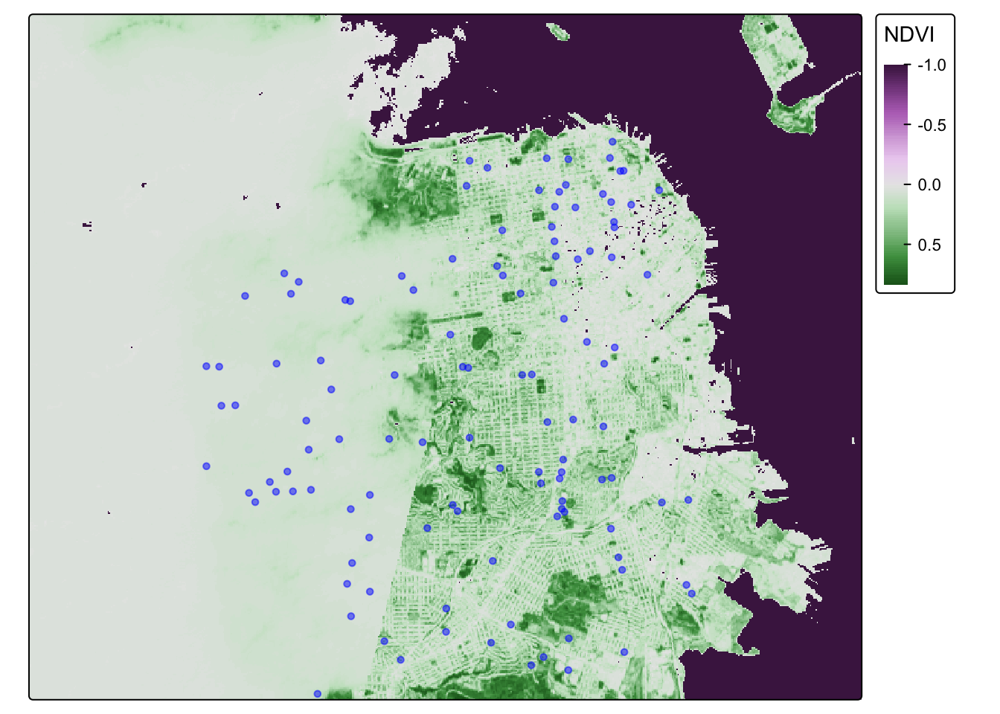
That is one fine looking map. You deserve a break–get outside and enjoy some greenspace.